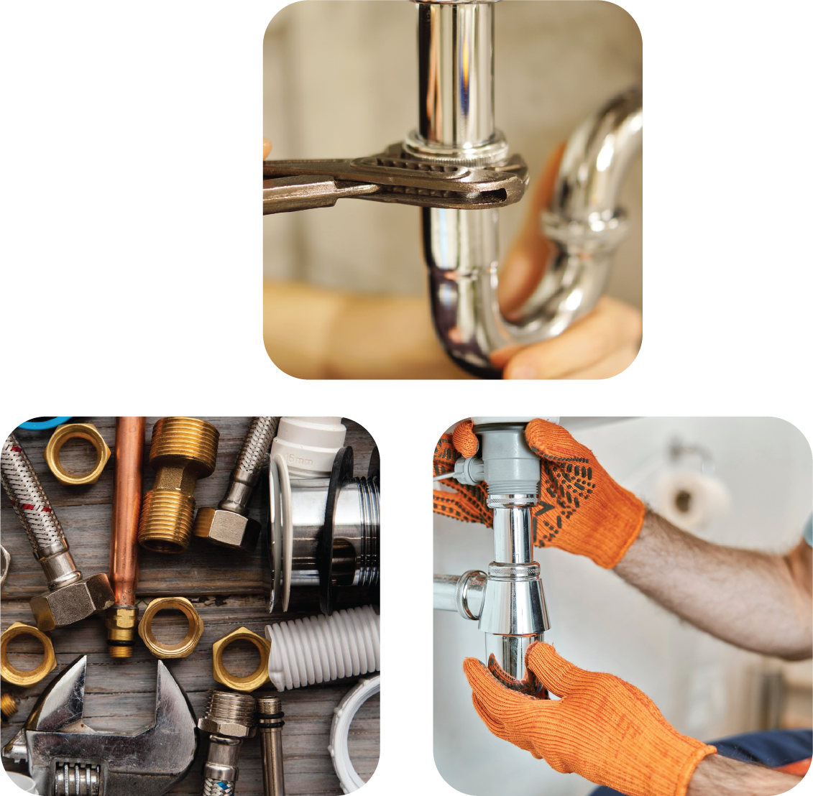

Websites
Websites for
Plumbers
Plumber based in the UK? Get in touch we think we could improve your business!
Websites
Plumber based in the UK? Get in touch we think we could improve your business!
Having a website as a plumber should definitely be at the top of your list when you're starting or trying to improve your business. Websites offer a way to market your services effectively while allowing you to create a custom approach that adheres to your customer journey. As a plumber, you might want a website to continuously inform your customers about what you do, your processes, and other useful information. This helps keep communication to a minimum and prioritizes queries that need to be answered, rather than repeating yourself (we know it can be annoying). A website is an effective way to provide your customers with meaningful information they are likely looking for.
Having a website also creates more opportunities. It can serve as another platform to market your services. While we are big believers in social media, we think a website can be an even more powerful tool. The free reign you have with a website allows for a range of possibilities, whether it's creating content to provide your customers with meaningful insights that build trust and online relationships, or presenting your work in a way that fully breaks down your process and methods. We thoroughly believe that here at Fortis, we can help your business thrive online, and it’s a massive missed opportunity if you, as a plumber, don’t take advantage of tools like a website.
We are looking for our first plumber to work with. Fortis is a new company, and we have helped a lot of trade businesses in different industries this year alone. We believe we can help your business, as most of the systems we have built while running our website company can be applied to a plumbing business. If you fancy working with us to build something amazing for your company, please get in touch. We would love to hear from you!
 Start building yours!
Start building yours!